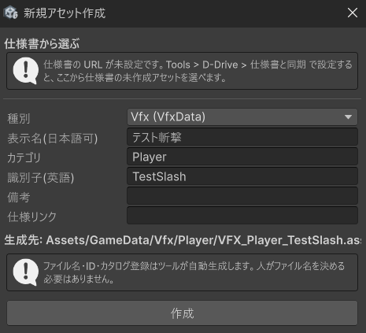
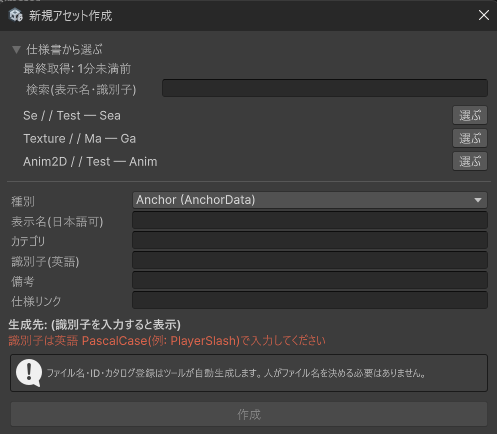
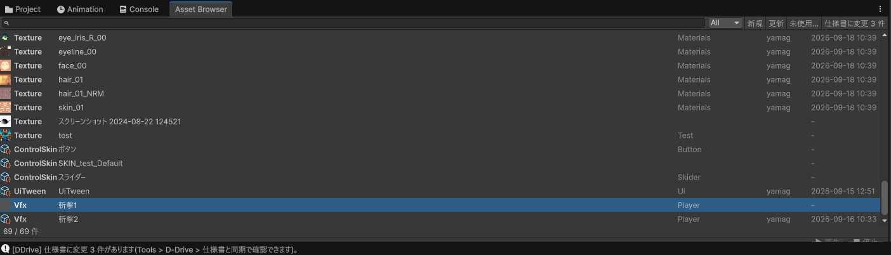
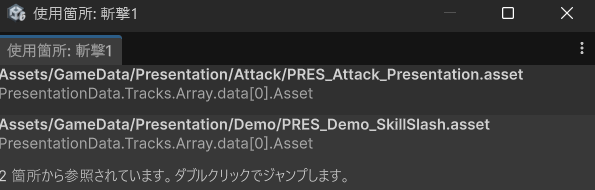
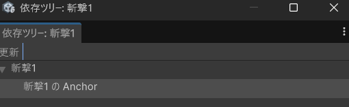
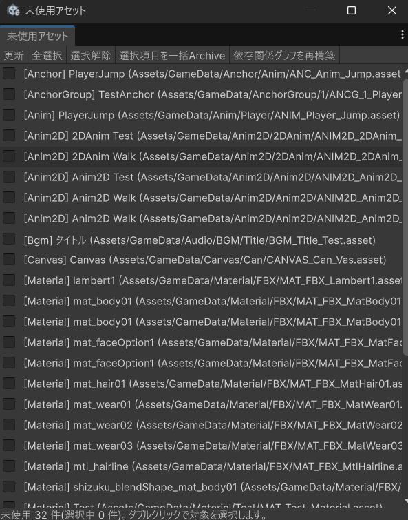
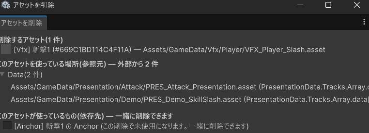
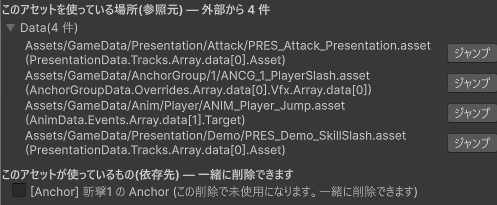
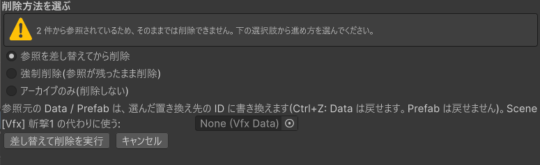
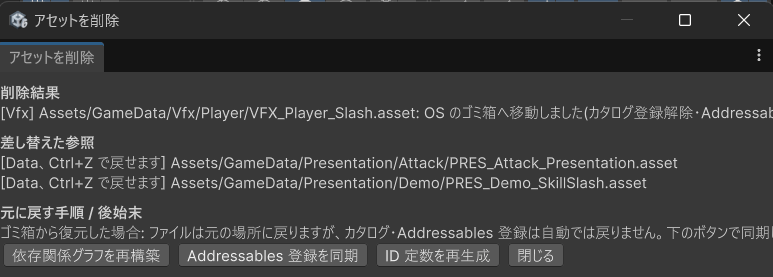

最終更新日: 2026-09-25
Asset Browser は D-Drive の入口になるウィンドウです。登録済みの素材（アセット）を一覧で見たり、検索したり、新しく登録したりできます。
Tools をクリック → D-Drive → Asset Browser をクリック
| 場所 | 説明 |
|---|---|
| 検索欄（左上） | 文字を入れると、その場で一覧が絞り込まれます。日本語の表示名でも検索できます（例:「斬撃」と入れると「剣の斬撃音」がヒット）。カテゴリ・タグ・説明文も検索対象です。 |
| 種別メニュー（検索欄の右） | 「All」のままなら全部表示。「Se」を選ぶと効果音だけ、「Bgm」を選ぶと BGM だけに絞れます。種別は Se / Bgm / Vfx / Anim / Anim2D / Material / Texture / Canvas / Prefab / Model / Anchor / AnchorGroup / ControlSkin（ボタン・スライダーの Skin）/ UiTween など。「Presentation」「Shake」「Haptics」はまだ中身が無いので選んでも 0 件です。 |
| 「新規」ボタン | 新しいアセットを登録するダイアログを開きます（下で説明）。 |
| 「更新」ボタン | 一覧を最新の状態に読み直します。（普段は自動で更新されるので、表示がおかしいと感じた時だけ押せばOK） |
| 「未使用...」ボタン（2026-09-14 追加） | どこからも使われていないアセットの一覧を開きます。詳しくは下の「使用箇所を調べる / 使っていないアセットを片付ける / 安全に削除する」を参照。 |
| 一覧 | 登録済みのアセットが並びます。クリックすると右の Inspector に詳細が表示されます。Ctrl/Shift クリックで複数選択できます（2026-09-14 から。「削除...」で複数まとめて削除対象にできます）。ダブルクリック（または選んで Enter キー）すると、そのアセットの専用エディタが開いて対象になります（2026-09-14 追加。専用エディタが無い種類のアセットは、これまでどおり Project ウィンドウの実ファイルがハイライトされるだけです）。右クリックすると「エディターで開く」（専用エディタが1つに決まらない種類は候補が並びます）・「使用箇所を表示」「依存ツリーを表示」「アーカイブする」「パスをコピー」「削除...」のメニューが出ます（2026-09-14 追加。「削除...」は専用ウィンドウが開きます。詳しくは下の節を参照）。「パスをコピー」（2026-09-19 追加）は、そのアセットの場所（例: Assets/GameData/Vfx/Player/VFX_Player_Slash.asset）をクリップボードに入れます。プログラマーへの問い合わせや、Project ウィンドウでの検索に貼り付けて使えます。行を選んで Delete キーを押す（2026-09-19 追加。Mac は Cmd+Backspace）と、右クリックの「削除...」と同じ削除ウィンドウが開きます（複数選択ならまとめて対象）。 |
| プレビューバー（一番下） | 選択中の音をその場で試聴できます。▶再生 / ■停止 / ループ / 速度。音以外（VFX やモデルなど）を選んでいるときは押せません。ウィンドウを低くしても、一覧の下の件数表示とプレビューバーは常に見える位置に残ります。 |
| 件数表示（一覧の下） | 「12 / 48 件」のように「いま表示している件数 / 全件数」が出ます。検索や種別で絞っているときの目安に。 |
| 更新者・更新日時の列（2026-09-15 追加） | カテゴリの右に、最後に保存した人と保存した日時が出ます（Inspector の「バージョン表示」と同じ値）。並べ替えはまだできません。 |
検索欄は1文字打つたびにその場で絞り込まれます（Enter キーを押す必要はありません）。
入力した文字は、そのアセットの以下の項目のうちどれか1つにでも含まれていればヒットします（大文字・小文字は区別しません）。
| 項目 | 説明 |
|---|---|
| 表示名 | 「剣の斬撃音」のような、人が入力した名前 |
| ファイル名・保存場所 | ツールが自動生成したファイル名(例: SE_Player_SwordSlash)や、保存されているフォルダのパス |
| カテゴリ | 登録時に入力した分類 |
| 説明文 | Inspector の「Description」に書いた内容 |
| 作成者 | Inspector の「Author」（2026-09-15 から、保存すると自動で最後に保存した人の名前になります。手入力は不要です） |
| タグ | Inspector の「Tags」に登録した各キーワード |
種別メニュー（All/Se/Bgm/…）を絞った状態で検索すると、「その種別に該当する」かつ「検索文字にヒットする」ものだけが表示されます。両方の条件を同時に満たす必要があります。
ファイルを後から設定したい場合や、効果音以外の種類はこちら。開くダイアログは同じで、「種別」で作るものを選びます。


Asset Browser を開かずに、決められたフォルダにファイルを置くだけで下記 9 種類の Data が自動的にできます（数秒後に Console にログが出ます）。
| 置く場所 | 置くファイル | できる Data |
|---|---|---|
Assets/SourceAssets/Se/<カテゴリ>/ | .wav / .mp3 / .ogg | SeData |
Assets/SourceAssets/Bgm/<カテゴリ>/ | .wav / .mp3 / .ogg | BgmData |
Assets/SourceAssets/Texture/<カテゴリ>/ | .png / .jpg / .tga 等 | TextureData |
Assets/SourceAssets/Model/<カテゴリ>/ | .fbx | ModelData |
Assets/SourceAssets/Anim/<カテゴリ>/ | .anim / .fbx | AnimData |
Assets/SourceAssets/Anim2D/<カテゴリ>/ | .anim / .fbx | Anim2DData |
Assets/SourceAssets/Prefab/<カテゴリ>/ | .prefab | PrefabData |
Assets/SourceAssets/Canvas/<カテゴリ>/ | .prefab | CanvasData |
Assets/SourceAssets/Vfx/<カテゴリ>/ | .prefab | VfxData |
<カテゴリ> のフォルダ名がそのまま Data の「カテゴリ」になり、ファイル名がそのまま識別子(英語 PascalCase になっていない場合は自動で整形)になります。例えば Assets/SourceAssets/Se/Player/Slash.wav を置くと、カテゴリ「Player」・識別子「Slash」の SE_Player_Slash ができます。表示名は後から Inspector で日本語に変えられます。
SourceAssets の直下や、上の表にある種別名(Se/Bgm/Texture/Model/Anim/Anim2D/Prefab/Canvas/Vfx)以外のフォルダに置いても反応しません。「1階層目」が種別フォルダである必要があります(大文字・小文字も一致させてください)。例えば Assets/SourceAssets/Slash.wav(直下)や Assets/SourceAssets/Check/Se/Slash.wav(種別フォルダの上に別フォルダがある)は無視されます。置き方を間違えた場合は Console に案内の警告ログが出ます。フォルダが用意されていない場合は Tools > D-Drive > Generate > SourceAssets の既定フォルダを作成 で作れます。
Audio Editor・VFX Editor・Canvas Editor・UI Tween Editor など、各専用エディタのツールバー（上部）にも同じ「＋ 新規作成」ボタンがあります。Asset Browser を開かずに、いま作業しているエディタからその場で新しいアセットを作れます。
Tools > D-Drive > Editors > …）| 項目 | 入力するもの | 例 |
|---|---|---|
| 種別 | 作りたいアセットの種類。効果音なら「Se (SeData)」、BGM なら「Bgm (BgmData)」。ほかに Vfx / Anim / Anim2D / Material / Texture / Canvas / Prefab / Model / Anchor / AnchorGroup / UiTween があり、ボタン用とスライダー用の Skin は「ControlSkin (ButtonSkinData)」「ControlSkin (SliderSkinData)」の 2 行に分かれています。 | Se (SeData) |
| 表示名 | 日本語でOK。一覧や検索で使われる名前。後から変えても大丈夫。 | 剣の斬撃音 |
| カテゴリ | 整理用の分類。空欄でもOK。 | Player |
| 識別子 | 英語で、先頭大文字・スペースなし。プログラマーがコードから呼ぶときの名前になります。迷ったら英単語をつなげて各単語の頭を大文字に。 | SwordSlash |
| 備考 | 空欄でもOK。「仕様書から選ぶ」で行を選ぶと自動で入りますが、手入力もできます。 | 3段階で音程を変える |
| 仕様リンク | 空欄でもOK。アセット発注ツールの発注ページへのリンクなど。設定すると Inspector に「仕様書を開く」ボタンが出ます。 | （発注ページのURL） |
SE_Player_SwordSlash というファイルが Assets/GameData/Audio/SE/Player/ フォルダに自動で作られ、管理台帳への登録もすべてツールがやります。ダイアログの下に「生成先」がプレビュー表示されるので確認できます。Player、Enemy/Attack のように / で階層も可）、カテゴリごとのフォルダに自動で仕分けられるので、Project ウィンドウから直接探すときも見つけやすくなります。
| 種別 | ファイル名の頭 | 保存フォルダ（Assets/GameData/ の下） |
|---|---|---|
| Se / Bgm | SE_ / BGM_ | Audio/SE / Audio/BGM |
| Vfx | VFX_ | Vfx |
| Anim / Anim2D | ANIM_ / ANIM2D_ | Anim / Anim2D |
| Material / Texture | MAT_ / TEX_ | Material / Texture |
| Model / Prefab | MODEL_ / PREFAB_ | Model / Prefab |
| Canvas | CANVAS_ | Canvas |
| Anchor / AnchorGroup | ANC_ / ANCG_ | Anchor / AnchorGroup |
| ControlSkin（Skin） | SKIN_ | Ui/Skin |
| UiTween | UITWEEN_ | UiTween |
Tools → D-Drive → Generate → GameData をカテゴリ配置に整理 を実行すると、ツールが正しいフォルダへ移動して名前も直してくれます（移動してもゲーム側の参照は壊れない仕組みになっています）。アイコン画像（GameData/Icons）は移動・改名されませんが、そのまま使われ続けるので問題ありません。
sword_slash / 剣斬撃 / 1Slash → OK: SwordSlash

もっと細かく確認したい場合（波形を見る・3D の聞こえ方を確かめる等）は Audio Editor を使います。
アセットは他のアセットやシーンから「ID」で参照されます。見た目だけでは「これ、どこかで使われているんだっけ？」が分からないので、D-Drive が自動で調べてくれます。

「どこからも参照されていません（未使用）」と出たら、そのアセットは今のところ誰にも使われていません。
右クリック →「依存ツリーを表示」で、選んだアセットがさらに何を使っているかをツリー（木構造）で確認できます。例えば Prefab がマテリアルを使い、マテリアルがテクスチャを使い…という連なりが一目で分かります。


本当に消してよいアセットは、一覧の行を右クリック →「削除...」（または行を選んで Delete キー）から削除できます（複数選択して右クリックすれば、まとめて削除対象にできます）。以前は小さな確認ダイアログでしたが、今は専用の「アセットを削除」ウィンドウが開き、依存関係と削除後にどうなるかが一目でわかるようになりました。


参照元が1つもない場合はそのまま「削除する」だけで済みますが、参照が残っている場合は次の4つから選びます。

「実行」を押すと、同じウィンドウがそのまま結果画面に切り替わります。

シーンを開いたとき、そのシーンで使う音・エフェクトなどを先読み（Preload）しておくと、実際に鳴らす・出す瞬間の一瞬の遅れが減ります。これはプログラマー / レベル担当が行う作業ですが、デザイナーが意識しておくとよい点をまとめます。
ScenePreloadList、Assets/GameData/Preload/）は、Tools > D-Drive > Generate > Preload リストを再集計(現在のシーン)（または「ビルド設定の全シーン」）で自動的に集計されます。デザイナーが手で ID を書き足すことはありません。シーン・Prefab に置かれた参照だけでなく、プログラマーのコードが ID を直接使っている場合もあわせて集計されますSceneLoadingScreen）です。デザイナー向けの本格的な Canvas ベースのロード画面は今後の別チケットで用意される予定ですTools → D-Drive → Generate → 依存関係グラフを再構築 を一度実行してください（プロジェクトを最初に開いた直後などは索引が空のことがあります）。